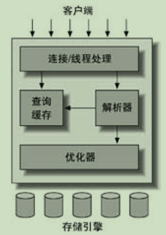

第一章 MySQL 架构与历史
1.1 MySQL 的逻辑架构

1.3 事务
- ACID
- 原子性（atomicity）：一个事务必须被视为一个不可分割的最小工作单元，整个事务中的所有操作要么全部提交成功，要么全部失败回滚。
- 一致性（consistency）：数据库总是从一个一致性的状态转换到另外一个一致性的状态。
- 隔离性（isolation）：通常来说，一个事务所做的修改在最终提交以前，对其他事务是不可见的。
- 持久性（durability）：一旦事务提交，则其所做的修改就会永久保存到数据库中。
1.3.1 隔离级别
- READ UNCOMMITTED（未提交读）：事务可以读取未提交的数据，这也被称为脏读（Dirty Read）。在实际应用中一般很少使用。
- READ COMMITTED（提交读）：一个事务从开始直到提交之前，所做的任何修改对其他事务都是不可见的。这个级别有时候也叫做不可重复读（nonrepeatable read）
- REPEATABLE READ（可重复读）：该级别保证了在同一个事务中多次读取同样记录的结果是一致的。它解决了脏读的问题，无法解决另外一个幻读（Phantom Read）的问题。
- 幻读：指的是当某个事务在读取某个范围内的记录时，另外一个事务又在该范围内插入了新的记录，当之前的事务再次读取该范围的记录时，会产生幻行（Phantom Row）。
- SERIALIZABLE（可串行化）：它通过强制事务串行执行，避免了前面说的幻读的问题。SERIALIZABLE 会在读取的每一行数据上都加锁，所以可能导致大量的超时和锁争用的问题。
1.3.2 死锁
- 当多个事务试图以不同的顺序锁定资源时，就可能会产生死锁。多个事务同时锁定同一个资源时，也会产生死锁。
- 为了解决这种问题，数据库系统实现了各种死锁检测和死锁超时机制。InnoDB 目前处理死锁的方法是，将持有最少行级排他锁的事务进行回滚。
- 死锁发生以后，只有部分或者完全回滚其中一个事务，才能打破死锁。
1.3.3 事务日志
- 使用事务日志，存储引擎在修改表的数据时只需要修改其内存拷贝，再把该修改行为记录到持久在硬盘上的事务日志中，而不用每次都将修改的数据本身持久到磁盘。
- 事务日志采用的是追加的方式，顺序 I/O，而不是随机 I/O，快得多。
- 预写式日志（Write-Ahead Logging）：事务日志持久以后，内存中被修改的数据在后台可以慢慢地刷回到磁盘。事务日志恢复数据。
1.4 多版本并发控制
- InnoDB 的 MVCC，是通过在每行记录后面保存两个隐藏的列来实现的。这两个列，一个保存了行的创建时间，一个保存行的过期时间（或删除时间）。当然存储的并不是实际的时间值，而是系统（事务）版本号。
1.5 MySQL 的存储引擎
- MySQL 会在数据库子目录下创建一个和表同名的.frm 文件保存表的定义。
1.5.1 InnoDB 存储引擎